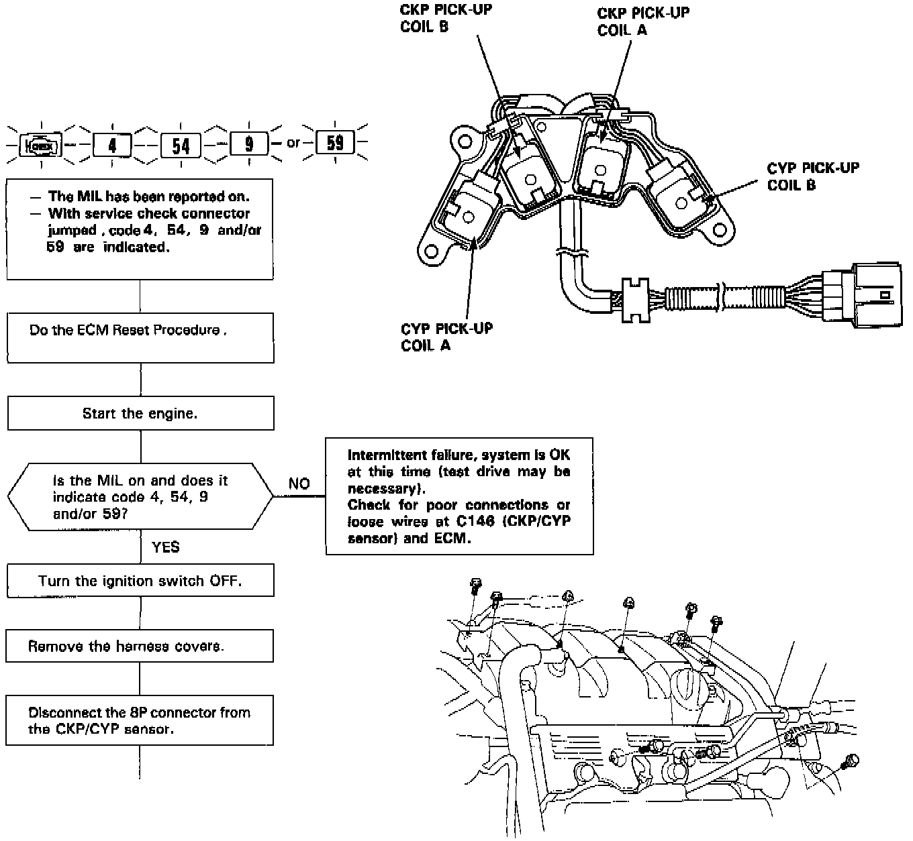
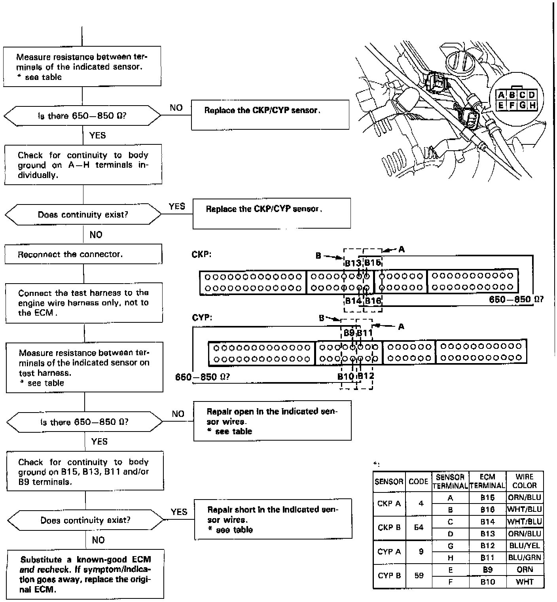

DTC 54
The Malfunction Indicator Lamp indicates Diagnostic Trouble Code 54: A problem in the circuit of the Crankshaft Position (CKP) Sensor B.


The CKP Sensor determines timing for fuel injection and ignition of each cylinder and also detects engine speed. The CYP Sensor detects the position of No. 1 cylinder for sequential fuel injection to each cylinder.